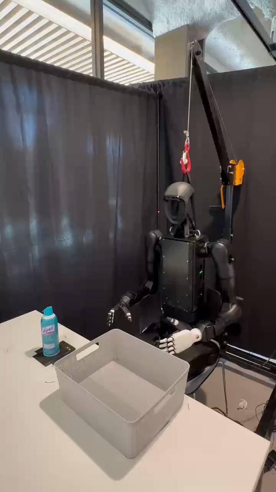

Humanoid Everyday · pick-place-4__pick_up_an_air_purify_spray_and_put_it_inside_a_container
Pick up an air purify spray and put it inside a container

Visual review action_review.json
{
"prompt_protocol": "humanoid_action_v1",
"prompt_provenance": "visually_authored_from_video_and_initial_frame",
"reviewed_contact_sheets": [
"sheet_001.jpg",
"sheet_002.jpg",
"sheet_003.jpg"
],
"inspected_frame_stride": 2,
"inspected_sampled_frame_count": 179,
"inspection_coverage": {
"complete_source_sequence": true,
"contact_sheet_frame_ranges": [
[
0,
126
],
[
128,
254
],
[
256,
356
]
],
"native_frame_indices": [
80,
138,
164,
214,
250,
270,
278,
357
],
"source_initial_png_inspected_native": true,
"last_decoded_frame_inspected_native": 357
},
"initial_scene": "A front-facing humanoid sits behind a tabletop. A turquoise cylindrical spray can stands on a black rectangular pad to the robot's right. An empty open gray plastic container is in front of it. Its robot-relative right hand is black and its left hand is white.",
"anatomical_side_evidence": {
"active_side": "right",
"confidence": "high",
"evidence": "The front-facing chest plate, head front and visible continuous shoulder-to-arm attachments establish robot anatomy. The active black hand is attached to the shoulder on image left, which is the robot-relative right side; the idle white hand is attached to the opposite, robot-relative left shoulder. Native first-frame PNG and frames 80, 164 and 214 show these attachments."
},
"arm_hand_roles": {
"right": "Reaches toward the can, closes articulated fingers around its cylindrical body, lifts and carries it over the container, lowers and releases it upright, then retracts.",
"left": "White hand remains open near the lap/table edge without touching the can or container. It provides no visible support.",
"coordination": "Single-right-hand manipulation; no hand-to-hand transfer, bimanual support, or interaction with a person."
},
"observed_sequence": [
{
"start_frame": 0,
"end_frame": 14,
"observation": "Can stands upright on the black pad; container is empty; right hand is near the body and left hand is open near the lap."
},
{
"start_frame": 16,
"end_frame": 80,
"observation": "Right shoulder and elbow extend the black hand toward the can with fingers spread; by frame 80 the hand surrounds its upper body."
},
{
"start_frame": 82,
"end_frame": 136,
"observation": "Right articulated fingers close around the cylindrical body while the can remains at the pad; the arm begins lifting and the can starts to tilt."
},
{
"start_frame": 138,
"end_frame": 164,
"observation": "Right hand tilts the can away from vertical and lifts it clear of the black pad. Frame 164 shows the whole can suspended above the table."
},
{
"start_frame": 166,
"end_frame": 214,
"observation": "Right arm carries the suspended can inward and over the open gray container, rotating it back toward vertical. Left hand remains idle."
},
{
"start_frame": 216,
"end_frame": 258,
"observation": "Right hand lowers the can inside the container. Its base reaches the container floor and it settles upright; the fingers continue surrounding the upper body during placement."
},
{
"start_frame": 260,
"end_frame": 278,
"observation": "Right fingers open and disengage. The can remains upright independently in the container; frame 270 shows an open hand and frame 278 shows the hand lifting clear."
},
{
"start_frame": 280,
"end_frame": 314,
"observation": "Right hand retracts upward and outward, away from the deposited can. Can remains upright and unmoving in the container."
},
{
"start_frame": 316,
"end_frame": 357,
"observation": "Right arm returns down toward the body. Final native frame shows the can upright in the container with both hands clear."
}
],
"terminal_state": "Turquoise spray can stands upright on the floor inside the gray container after right-hand release; both hands are clear of the object. Container stays on the tabletop.",
"selected_execution_status": "success_visible",
"outcome": {
"grasp": "Can securely lifted in right hand.",
"placement": "Can released upright within the gray container.",
"source_overall_success_label": "Not inferred from task name; visible manipulation succeeds."
},
"uncertainties": [
"Exact frame of first finger closure and exact base-contact frame are bounded by the every-second-frame inspection and temporary hand occlusion; release and independent upright final state are directly visible.",
"Source describes an air purifier spray bottle; visible object is a turquoise cylindrical spray can. Its exact formulation is not necessary for the action prompt."
],
"annotation_discrepancies": [
{
"source": "original task instruction",
"description": "Broad pick-and-place action is visually confirmed. Source omits the active right hand, upright release and actual end state. Prompt calls the visibly cylindrical aerosol-shaped object a turquoise spray can rather than treating the source's air purifier description as verified product identity."
}
],
"evidence_frame_indices": [
0,
80,
138,
164,
214,
250,
270,
278,
357
],
"video_id": "pick-place-4",
"dataset": "Humanoid_Everyday",
"review_source_video": "Humanoid_Everyday/pick-place-4__pick_up_an_air_purify_spray_and_put_it_inside_a_container/third_person/original/original.mp4",
"source_frame_count": 358,
"source_fps": 29.91643454038997,
"native_detail_frames": [
80,
138,
164,
214,
250,
270,
278,
357
],
"world_model_prompt": "The humanoid uses its right hand to grasp the turquoise spray can around its body, lift it off the black pad, and carry it over the gray open container. It lowers the can into the container and releases it upright, then withdraws its right hand. Keep the camera fixed; preserve robot geometry, physically valid joint motion, and normal gripper opening and closing.",
"original_task_instruction": "This task involves picking up an air purifier spray bottle and placing it inside a container, demonstrating object manipulation and spatial planning.",
"selected_segment": {
"start_frame": 0,
"end_frame_exclusive": 358,
"reason": "Complete original single-task reference; no cropping or trimming requested."
},
"source_video_sha256": "d6a00d4b85479b60da83a4c8b7eff2913169f29ab30b11b045a987a483fdba44",
"review_completed_at": "2026-10-13T16:46:42.334666+00:00",
"dedicated_review_agent": "review_he_pick_place_4"
}